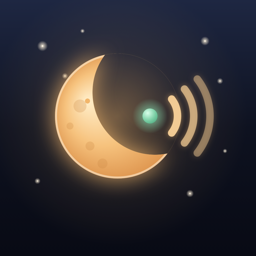

Lullwatch
A baby monitor that never passes off an old picture as live.
Getting started
1. On the device for the nursery
Open Lullwatch and choose In the nursery. An older iPhone or iPad works well. Keep it plugged in, about a meter from the crib and out of reach.
2. On your own device
Choose With me and scan the code on the nursery screen. You can also scan it with the iPhone Camera app. You only pair once.
3. Leave Lullwatch open in the nursery
The nursery screen dims itself. If Lullwatch is closed there, the picture stops, and your device will tell you so.
Just one iPhone and an Apple Watch
Choose Just this iPhone and my Watch on the iPhone you leave in the nursery. It listens and posts a notification when it hears something. iOS sends notifications to your Apple Watch only while that iPhone is locked, so lock it after you tap Start. Use Send a test alert first to check it reaches your wrist. This mode is sound only.
What the colors mean
LIVE · 0.4 s shows how long ago the nursery last checked in. It updates several times a second.
Picture stopped means the camera on the nursery device has paused, for example because Lullwatch was closed there. Sound may still be coming through. The old picture is blurred so it can't be mistaken for live.
Red screen and alarm means the sound or the connection has stopped. Go and check on your baby. The red screen stays until the nursery is back.
Troubleshooting
The devices can't find each other
Both must be on the same Wi-Fi network, and both need Local Network access (Settings › Privacy & Security › Local Network › Lullwatch). Guest networks and some mesh or hotel networks block devices from seeing each other.
I can't hear quiet sounds
Turn your volume up, then raise Volume boost in Settings. The sound alert slider sets how loud it must get before you're alerted.
The picture is dark
Set Night view to On or Auto. A dim night light in the room helps a lot. You can also turn on Night light, which makes the nursery screen glow softly.
Does it work away from home?
No. Lullwatch only connects inside your home network. That's on purpose: nothing about your nursery ever goes to the internet.
Important
Lullwatch is a convenience for parents. It is not a medical device, and it does not monitor breathing, movement or health. Wi-Fi, batteries and phones can fail. Never rely on it in place of checking on your child yourself, and always follow safe sleep guidance.
Privacy Policy
Lullwatch collects no data. There is no account, no sign-in, no analytics, no advertising, and no server.
Camera and microphone
Video and sound go directly from your nursery device to your paired devices over your local network. The connection is encrypted with a key that is created on your device and exists only inside the pairing code. Nothing is recorded or saved, and nothing is sent to us or anyone else.
Local network
Lullwatch uses your local network only to let your own devices find and talk to each other.
Notifications
Alerts are created on your device. They are not sent through any server.
Stored on your device
Only your settings and the pairing key, kept in your device's Keychain. Deleting the app removes them.
Children
Lullwatch is used by parents. It collects no information from anyone, including children.
Last updated November 3, 2026.
Contact
Questions or problems? Email tajimaru1209@gmail.com. Please include your device models and iOS versions.